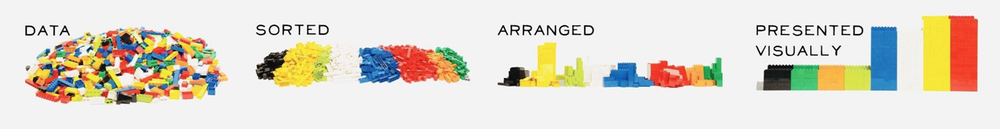
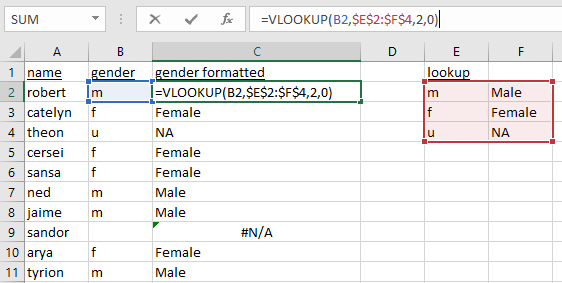

a <- c(11, 22, 33, 44, 55, 10)
# different value types may be used as indices
# 1. positive integers
a[4]
a[2:3]
a[c(3, 1)]
a[c(2, 2, 3)] # repeat the extracted element
a[4.9] # implicit coercion
a[1.2:3.2]
a[length(a)] # last element
# 2. negative integers
a[-4]
a[c(-4, -3)]
a[-c(4, 3)]
# a[c(-4, 3)]
# 3. logical values
a[c(TRUE, FALSE, TRUE, FALSE, FALSE, FALSE)] # selector vector is of same size
a[c(TRUE, FALSE)] # selector vector is shorter than data vector
a[c(TRUE, FALSE, FALSE, FALSE)]
a[c(TRUE, FALSE, TRUE, FALSE, FALSE, FALSE, TRUE)] # selector vector longer than data vector
a > 35
a[a > 35]
a[a > 20 & a < 50]
a[c(FALSE, TRUE, NA)]
# 4. empty
a[]
identical(a, a[]) # remember that [ is just a function?
a[NULL]
typeof(a[NULL])
a[NA]
# 5. zero
a[0]
a[c(0, 1)]
# 6. characters
b <- setNames(c(11, 22, 33), letters[1:3]) # named vector
b["a"]
b[c("a", "a", "c")]11 Data manipulation
Pre-requisites
double,integer,character,logicalc,length,typeofas.logical,as.integer,as.double,as.character,as.numericis.atomic,is.logical,is.integer,is.double,is.character,is.numericis.infinite,is.nan,is.na,is.nullattr,names,setNames,[[]],strmatrix,t,diagdim,nrow,ncol,rownames,colnames,rbind,cbind,is.matrixarray,is.arrayclassfactor,gl,as.factor,tableas.Date,Sys.Datelist,is.list,as.list,unlistapply,lapply,sapplyWhat is data manipulation / transformation

- Recall the data structures we introduced in the previous session:

Outline
- Extraction
- Sequences
- Sets
- Search
- Merge
- Build-in datasets
- Reshape
- Aggregate
- Sorting
Recommended readings:
11.1 Extraction
Extraction, also known as “subsetting” or “indexing”, is the first step of data manipulation. It refers to the step to specify a sub-section of the data structure to operate on.
11.1.1 Operators
[, [[, and $
Extraction operators act on vectors, matrices, arrays and lists to extract or replace parts of the data structure. Indexing can occur on the right-hand-side (RHS) of an expression for extraction, or on the left-hand-side (LHS) for replacement.
- There are three extraction operators,
[,[[, and$. (see?Extract) [can select more than one element whereas the other two select a single element.[returns the same type- Extraction operators interact differently with different data structure.
- For vector structures, we only need
[. [[and$are only needed for list structures (recursive).$requires column names.- Partial matching is the default behaviour of
$, whereas[[applies exact matching by default. - Values of different types may be used as indices.
11.1.2 [, [[
11.1.2.1 from vectors
atomic vectors
[[ is not very useful for vectors.
matrix
Remember that matrices are just vectors with attributes, so you can index it with vectors. Note the difference a comma makes:

Again, [[ is not very useful for matrices (which are vectors).
11.1.2.2 from lists
lists
To go deeper, use [[. (The clue is in the print.)
What about a list of lists?

What about this? Can you point out where this is on the pepper photo?
Data frame
df <- data.frame(x = 1:10, y = letters[1:10])
df
df[1] # data frame
df[, 1] # character vector (comma matters)
df[1, ] # data frame
df[, 1:2] # data frame
df[3:5, ] # data frame
df[3:5, 2] # character vector
df[, c("y", "x", "x")] # reorder columns in data frame
df[, c("x", "x")] # duplicate columns in data frame
df[, c(2, 1, 1)]
# What is the difference between these pairs of statements:
df[2]
df[[2]]
df["y"]
df[["y"]]
df[c(TRUE, FALSE), ]
df[, c(TRUE, FALSE)]
df[c(TRUE, FALSE)]
df[df[, "x"] > 5, ]
df[df[, "x"] > 5, ]
df[df[["x"]] > 5, ]11.1.3 $
$is not valid for vectors$precedes column names of lists
?Extract- Both[[and$select a single element of the list. The main difference is that$does not allow computed indices (see Dynamic name), whereas[[does.x$nameis equivalent tox[["name", exact = FALSE]]. Also, the partial matching behavior of[[can be controlled using the exact argument.
# $ is not useful for vectors
m <- matrix(1:9, nrow = 3, ncol = 3)
colnames(m) <- c("a", "b", "c")
m
m["a"]
m[, "a"]
m$"a"
df <- data.frame(age = 1:10, initial = letters[1:10])
df["age"]
df[["age"]]
df$age
df$"age"
df$`age`
df$'age'
df$a
df$"a"
df$'a'
df$`a`
df[["a"]]
# what if both column names start with "a"
df2 <- data.frame(age = 1:10, account = letters[1:10])
df2$a
df2$g
df2$ag11.1.4 Dynamic name
df <- data.frame(age = 1:10, initial = letters[1:10])
df$age # we know this works
df$a # this also works
# What if the name of the wanted column is in a variable?
wanted_col <- "a"
df$wanted_col # would this work?
# if it does, why does df$age work?
df[[wanted_col]] # would this work?
wanted_col <- "age"
df[[wanted_col]] # feel better now?Remember “Everything that happens in R is a function call”.
Compare the comment for $ and [[. How do they each handle the second argument?
/* The $ subset operator.
We need to be sure to only evaluate the first argument.
The second will be a symbol that needs to be matched, not evaluated.
*//* The [[ subset operator. It needs to be fast. */
/* The arguments to this call are evaluated on entry. */11.1.5 Duplicated names
df <- data.frame(x = 11:13, y = letters[11:13])
rownames(df) <- c("r1", "r2", "r3")
# double the rows
df_rdbl <- rbind(df, df)
df_rdbl
rownames(df_rdbl) # row names are not duplicated
# double the columns
df_cdbl <- cbind(df, df)
names(df_cdbl) # column names are duplicated
df3 <- df_cdbl[1, 1:4]
names(df3) # further operation distinguishes the duplicated columns
duplicated(names(df_cdbl))
df_cdbl[!duplicated(names(df_cdbl))] # extract only the not duplicated columnsType
?subsetand you will see that there is a built-in function calledsubsetin R. Do you think we should include it in the lecture and why?
11.2 Sequences
From the previous section, we see that sequences of numbers are useful for specifying a section of a data structure. In this section, we take a look at different ways to generate sequences of values.
11.2.1 :
The colon (:) operator is a quick way to generate a sequence of numbers. Recall that we also used it to control for loops:
And that integers are the default type returned by ::
You can also generate a sequence of doubles:
What if we swap the bigger value to the LHS?
: returns a specific type of sequence of numbers that are 1 apart in numeric value. What if we want the interval to be more than 1?
11.2.2 seq
# well, you can always do this
(1:10) * 2
# but seriously, let's leave the maths to the computer
# and do this in a safer manner with `seq`
seq(from = 0, to = 20, by = 2)
seq(from = 20, to = 0, by = 2) #?
seq(from = 20.5, to = -5.30, by = -3)
seq(from = 1.6, to = 2.8, length.out = 14)
# sequence of length
seq_len(10)seqis a generalised version of:.seq_alongis the preferred method where possible.
11.2.3 seq_along
It is common to want to iterate through a data structure and perform a set of operations on each of its elements with a for loop. In which case we need to define a sequence to represent the indices of that structure. There are many ways to generate this sequence and we give a comparison between these methods and demonstrate why seq_along is the safest way to generate this sequence.
seq_along is the function to use when you want to iterate a structure with a for loop
# Assuming v0, v1, v2, v3 are the vectors you want to iterate over
v3 <- c(-11.1, -22.2, -33.3)
v2 <- c(-11.1, -22.2)
v1 <- c(-11.1)
v0 <- c()
# Three versions of looping over the vector
print_all_seq_along <- function(vv) {
for (ii in seq_along(vv)) {
print(vv[ii])
}
}
print_all_seq <- function(vv) {
for (ii in seq(vv)) {
print(vv[ii])
}
}
print_all_length <- function(vv) {
for (ii in 1:length(vv)) {
print(vv[ii])
}
}
# when this vector of at least length 2
print_all_seq_along(v3) # works
print_all_seq(v3) # works
print_all_length(v3) # works
# vector is of length 1
print_all_seq_along(v1) # works
print_all_seq(v1) # ?
print_all_length(v1) # works
# vector is empty
print_all_seq_along(v0) # works
print_all_seq(v0) # works
print_all_length(v0) # ?11.2.4 rep
rep (replicate) is another useful function to generate sequences of certain patterns.
11.2.5 expand.grid
Generate pairs of values from two sets of values, with all combinations of value pairs.
11.2.6 Dates
To create a sequence of dates
# know the start date and the length of the sequence
d <- as.Date("2020-02-25", format = "%Y-%m-%d")
d + 1:5
# know start date and end date
d1 <- as.Date("2020-02-25", format = "%Y-%m-%d")
d2 <- as.Date("2020-03-25", format = "%Y-%m-%d")
d1 + 1:(d2 - d1)
# with seq
seq(d1, d2, by = "days")
seq(d1, d2, by = "2 days")
seq(d1, d2 + 365 * 3, by = "years")
seq(d1, d2 + 365 * 3, by = "quarter")It is worth noting the lubridate package which provides a more intuitive way to define dates and times.
11.2.7 Random sequences
11.2.7.1 runif and rnorm
runif(n, min = 0, max = 1), getnrandom numbers uniformly-distributed betweenminandmax(runifwill not generate either of the extreme values unless max == min or max-min is small compared to min)rnorm(n, mean = 0, sd = 1), getnrandom numbers normally-distributed aroundmean
11.2.7.2 Reproducibility
seed - ?.Random.seed
11.2.7.3 Distributions
Details of these functions will be covered in the Mathematics and Statistics module later in the term.
| Distribution | Random numbers | Probability density function (PDF) | Cumulative Distribution function (CDF) | Quantile function |
|---|---|---|---|---|
| Uniform | runif |
dunif |
punif |
qunif |
| Normal | rnorm |
dnorm |
pnorm |
qnorm |
| Poisson | rpois |
dpois |
ppois |
qpois |
| Binomial | rbinom |
dbinom |
pbinom |
qbinom |
| Exponential | rexp |
dexp |
pexp |
qexp |
| Gamma | rgamma |
dgamma |
pgamma |
qgamma |
See ?Distributions for more details.

11.3 Sets
In this section, we take a look at when two groups of values are involved in the operation.
Basic set operations
A key property of sets, as compared to vectors, is that it does not contain duplicated values. R has a set of functions to perform basic set operations.
?union- Performs set union, intersection, (asymmetric!) difference, equality and membership on two vectors. Each ofunion,intersect,setdiffandsetequalwill discard any duplicated values in the arguments, and they applyas.vectorto their arguments (and so in particular coerce factors to character vectors).
Illustrated below are two sets s1 and s2. Each set has 5 elements. Both sets contain numbers 3, 4, and 5.

11.4 Search
Let’s take a closer look at intersect. (Typing the function name on the console returns the implementation of the function, just like a variable).
function (x, y)
{
if (is.null(x) || is.null(y))
return(NULL)
if (.set_ops_need_as_vector(x, y)) {
x <- as.vector(x)
y <- as.vector(y)
}
x <- unique(x)
names(x) <- NULL
y <- unique(y)
names(y) <- NULL
c(x[match(x, y, 0L) > 0L], y[0L])
}
<bytecode: 0x114ecff60>
<environment: namespace:base>We see two other functions unique and match are used to achieve intersect.
11.4.1 unique, duplicated
?unique- returns a vector, data frame or array like the input but with duplicate elements/rows removed.
?duplicated- determines which elements of a vector or data frame are duplicates of elements with smaller subscripts, and returns a logical vector indicating which elements (rows) are duplicates.
11.4.2 match, %in%
match is similar to is.element.
11.4.3 any, all
any and all search for TRUE values in the given structure, and they can be used to summarise the result from is.element or %in%
11.4.4 which, arrayInd
which is similar to match, but the condition is not restricted to equality:
which(LETTERS == "E")
which(1:10 > 3)
v <- c(5, 3, 5, 2, 7)
which.min(v)
which.max(v)
# ?which.min - If this extremum is unique (or empty), the results are the same as (but more efficient than)
# which(x == min(x, na.rm = TRUE)) or which(x == max(x, na.rm = TRUE)) respectively.
# what happens when the min / max is not unique?
which.min(c(v, 2))
which.max(c(7, v))
# what about matrices
m <- matrix(1:15, nrow = 3, ncol = 5)
which.max(m)
# how to get the indecies?
# 1. with which
which(m == max(m), arr.ind = TRUE)
# 2. with arrayInd
arrayInd(which.max(m), dim(m))11.4.5 sample
11.5 Merge
Lookup
One of the most frequently used functions in Excel is the vlookup function.

How do we do this in R?
11.5.1 Lookup
# example with vectors
x <- c("m", "f", "u", "f", "f", "m", "m", "")
lookup <- c(m = "Male", f = "Female", u = NA)
lookup[x]
# example with data frame
df <- data.frame(
name = c(
"robert", "catelyn", "theon", "cersei", "sansa",
"ned", "jaime", "sandor", "arya", "tyrion"
),
gender = c(
"m", "f", "u", "f", "f",
"m", "m", "", "f", "m"
)
)
lookup[df[["gender"]]]
df_res <- df
df_res[["gender_formatted"]] <- lookup[df[["gender"]]]
df_res11.5.2 match
df1 <- data.frame(
birth_house = c(
"baratheon", "stark", "stark", "stark", "stark",
"lannister", "lannister", "lannister", "greyjoy", "clegane"
),
name = c(
"robert", "catelyn", "sansa", "ned", "arya",
"cersei", "jaime", "tyrion", "theon", "sandor"
)
)
match(df$name, df1$name)
df_res <- df
df_res[["birth_house"]] <- df1[match(df$name, df1$name), "birth_house"]
df_res11.5.3 merge
11.6 Built-in datasets
Base R comes with a few datasets built-in for demonstration purposes. We will use some of these to demonstrate how some of the data manipulation functions work.
11.6.1 head, tail, summary
Quite often, the datasets are very long to read on one or even several screens. head and tail (as the identically named Linux/Unix commands) prints the beginning and end of the dataset.
11.7 Reshape
?morley: Michelson Speed of Light Data, A classical data of Michelson (but not this one with Morley) on measurements done in 1879 on the speed of light. The data consists of five experiments, each consisting of 20 consecutive ‘runs’. The response is the speed of light measurement, suitably coded (km/sec, with 299000 subtracted).
There are many ways to reshape data between long and wide format:
reshape, R basegatherandspread, part of thetidyrpackagemeltanddcast, part of thereshape2packagestackandunstack, R base
We give introduction to the solution with the first two options.
11.7.1 reshape
reshapeis part of R base.
morley_wide <- reshape(morley, idvar = c("Expt"), timevar = "Run", v.names = "Speed", direction = "wide", sep = "_")
#morley_wide <- reshape(morley, idvar = c("Expt"), timevar = "Run", v.names = c("Speed", "Run"), direction = "wide", sep = "_Run")
morley_wide
attributes(morley_wide)
morley_long <- reshape(morley_wide, idvar = c("Expt"), direction = "long")
morley_long
attributes(morley_wide)$reshapeWide <- NULL
morley_long <- reshape(morley_wide, idvar = c("Expt"), direction = "long") # no 'reshapeWide' attribute, must specify 'varying'
morley_long <- reshape(morley_wide, idvar = c("Expt"), direction = "long", varying = 2:ncol(morley_wide), v.names = "Speed")
morley_long <- reshape(morley_wide, idvar = c("Expt"), direction = "long", varying = 2:ncol(morley_wide), timevar = "Run", v.names = "Speed")
morley_long11.7.2 tidyr
gatherandspreadare part of thetidyr
morley_wide <- tidyr::spread(morley, key = Run, value = Speed)
morley_wide <- tidyr::pivot_wider(morley, names_from = Run, values_from = Speed)
morley_wide
morley_long <- tidyr::gather(morley_wide, key = Run, value = Speed, names(morley_wide)[-1])
morley_long <- tidyr::pivot_longer(morley_wide, names_to = "Run", values_to = "Speed", -Expt)
morley_long11.8 Aggregate
11.8.1 aggregate
- Formula method of aggregate
# one value grouped by one variable
aggregate( v1 ~ p1, data = dtf, mean)
aggregate( p2 ~ p1, data = dtf, length)
# multiple values grouped by one variable
aggregate(cbind(v1, v2) ~ p1, data = dtf, max)
# one value grouped by multiple variables
aggregate(v1 ~ p1 + p2, data = dtf, min)
# multiple values grouped by multiple variables
aggregate(cbind(v1, v2) ~ p1 + p2, data = dtf, mean)
aggregate(. ~ p1 + p2, data = dtf, mean)- with
dplyr
dtf2 <- dplyr::group_by(dtf, p1, p2)
dplyr::summarise(dtf2, v1.avg = mean(v1), v2.max = max(v2))
dplyr::summarise(dtf2, quantile(v1, c(0.01, 0.5)))
my_quantile <- function(x, probs) {
# dplyr::tibble(x = quantile(x, probs), probs = probs)
data.frame(x = quantile(x, probs), probs = probs)
}
dplyr::summarise(dtf2, my_quantile(v1, c(0.01, 0.5)))
?dplyr::summarise_each #deprecated
#
# aggregate(df3, by = list(df3$birth_house), FUN = length)
# aggregate(df3$name, by = list(df3$birth_house), FUN = length)
# aggregate(df3, by = list(df3$birth_house, df3$gender), FUN = length)11.8.2 Basic stats functions
Here are some R functions for basic descriptive statistic operations.
mean(1:10) # mean
mean(c(1:10, NA, NaN)) # mean
mean(c(1:10, NA, NaN), na.rm = TRUE) # mean
sd(1:10) # standard deviation
var(1:10) # variance
median(1:10) # median
# ?median - The default method returns a length-one object of the same type as x,
# except when x is logical or integer of even length, when the result will be double.
median(c(1, 2, 2, 10))
quantile(1:100, probs = c(0.05, 0.95))
quantile(1:100, probs = c(0, 1))
range(1:100)
v <- c(1, 3, 8, 2, NA, NaN)
min(v)
min(v, na.rm = TRUE)
max(v)
max(v, na.rm = TRUE)
max(c(v, Inf), na.rm = TRUE)
which.min(v) # na.rm = TRUE by default
which.max(v) # na.rm = TRUE by default
# ?which.min - If this extremum is unique (or empty), the results are the same as (but more efficient than)
# which(x == min(x, na.rm = TRUE)) or which(x == max(x, na.rm = TRUE)) respectively.
sum(1:100)
diff(c(1, 3, 5, 2, 10))
diff(c(1, 3, 5, 2, 10), lag = 3)
# cumulatives
cumsum(c(1, 3, 5, 2, 10))
cumprod(c(1, 3, 5, 2, 10))
cummax(c(1, 3, 5, 2, 10))
cummin(c(1, 3, 5, 2, 10))
cummin(c(10, 3, 5, 2, 10))11.8.3 Expand
11.9 Sorting
sort(x, decreasing = FALSE, ...) sort a vector or factor into ascending or descending order.
order returns a permutation which rearranges its argument into ascending or descending order.
Sorting methods method = c("auto", "shell", "quick", "radix") can be specified for both sort and order.
- Reorder columns
Exercises
See Section 15.2 for exercises on usages of data.frame.